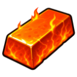

Ember Bar
Resource · Tier 7
| Property | Value |
|---|---|
| Value | 1,000 coins |
| Stacks | Yes |
Made by
| Recipe | Level | Needs |
|---|---|---|
| 🔨 Smelt Ember Bar | 🔨 Forging 90 |
Used to make
| Recipe | Level | Amount |
|---|---|---|
| 🪶 Fletch Ember Arrows | 🪶 Fletching 90 | 1 |
| ⚒️ Smith Ember Axe | 🔨 Forging 91 | 2 |
| ⚒️ Smith Ember Pickaxe | 🔨 Forging 92 | 2 |